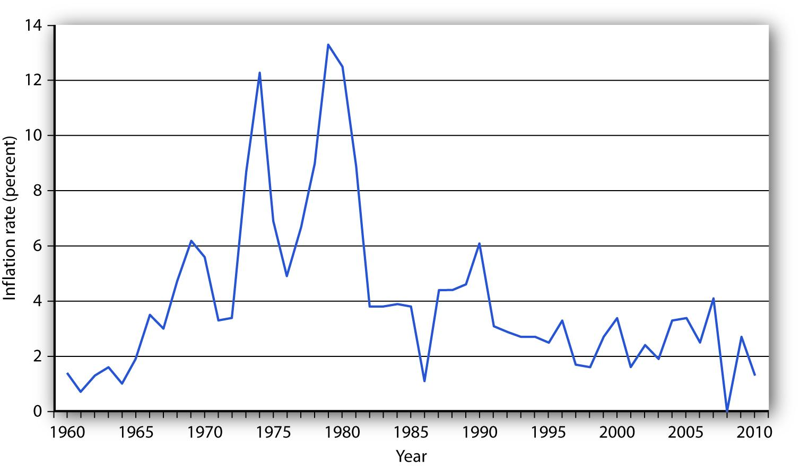

Concern about changes in the price level has always dominated economic discussion. With inflation in the United States generally averaging only between 2% and 3% each year since 1990, it may seem surprising how much attention the behavior of the price level still commands. Yet inflation was a concern in 2004 when there was fear that the rising price of oil could trigger higher prices in other areas. Just the year before, when inflation fell below 2%, there was talk about the risk of deflation. That did not happen; prices continued rising. Inflation rose substantially in the first half of 2008, renewing fears about subsequent further increases. 2010 brought on renewed concern of possible deflation. Just what are inflation and deflation? How are they measured? And most important, why do we care? These are some of the questions we will explore in this section.
InflationAn increase in the average level of prices. is an increase in the average level of prices, and deflationA decrease in the average level of prices. is a decrease in the average level of prices. In an economy experiencing inflation, most prices are likely to be rising, whereas in an economy experiencing deflation, most prices are likely to be falling.
There are two key points in these definitions:
What difference does it make if the average level of prices changes? First, consider the impact of inflation.
Inflation is measured as the annual rate of increase in the average level of prices. Figure 5.6 "Inflation, 1960–2010" shows how volatile inflation has been in the United States over the past four decades. In the 1960s the inflation rate rose, and it became dramatically worse in the 1970s. The inflation rate plunged in the 1980s and continued to ease downward in the 1990s. It remained low in the early 2000s and began to accelerate in 2007 and has remained low since.
Figure 5.6 Inflation, 1960–2010
The U.S. inflation rate, measured as the annual rate of change in the average level of prices paid by consumers, varied considerably over the 1960–2010 period.
Source: Bureau of Labor Statistics, All Urban Consumers CPI-U, 1982–84 = 100, Dec.–Dec. inflation rate. Data for 2010 is through October.
Whether one regards inflation as a “good” thing or a “bad” thing depends very much on one’s economic situation. If you are a borrower, unexpected inflation is a good thing—it reduces the value of money that you must repay. If you are a lender, it is a bad thing because it reduces the value of future payments you will receive. Whatever any particular person’s situation may be, inflation always produces the following effects on the economy: it reduces the value of money and it reduces the value of future monetary obligations. It can also create uncertainty about the future.
Suppose that you have just found a $10 bill you stashed away in 1990. Prices have increased by about 50% since then; your money will buy less than what it would have purchased when you put it away. Your money has thus lost value.
Money loses value when its purchasing power falls. Since inflation is a rise in the level of prices, the amount of goods and services a given amount of money can buy falls with inflation.
Just as inflation reduces the value of money, it reduces the value of future claims on money. Suppose you have borrowed $100 from a friend and have agreed to pay it back in one year. During the year, however, prices double. That means that when you pay the money back, it will buy only half as much as it could have bought when you borrowed it. That is good for you but tough on the person who lent you the money. Of course, if you and your friend had anticipated such rapid inflation, you might have agreed to pay back a larger sum to adjust for it. When people anticipate inflation, they can adjust for its consequences in determining future obligations. But unanticipated inflation helps borrowers and hurts lenders.
Inflation’s impact on future claims can be particularly hard on people who must live on a fixed income, that is, on an income that is predetermined through some contractual arrangement and does not change with economic conditions. An annuity, for example, typically provides a fixed stream of money payments. Retirement pensions sometimes generate fixed income. Inflation erodes the value of such payments.
Given the danger posed by inflation for people on fixed incomes, many retirement plans provide for indexed payments. An indexed payment is one whose dollar amount changes with the rate of change in the price level. If a payment changes at the same rate as the rate of change in the price level, the purchasing power of the payment remains constant. Social Security payments, for example, are indexed to maintain their purchasing power.
Because inflation reduces the purchasing power of money, the threat of future inflation can make people reluctant to lend for long periods. From a lender’s point of view, the danger of a long-term commitment of funds is that future inflation will wipe out the value of the amount that will eventually be paid back. Lenders are reluctant to make such commitments.
Uncertainty can be particularly pronounced in countries where extremely high inflation is a threat. HyperinflationAn inflation rate in excess of 200% per year. is generally defined as an inflation rate in excess of 200% per year. Inflation of that magnitude erodes the value of money very quickly. Hyperinflations occurred in Germany in the 1920s and in Yugoslavia in the early 1990s. There are stories about how people in Germany during the hyperinflation brought wheelbarrows full of money to stores to pay for ordinary items. In Yugoslavia in 1993 there was a report of a shop owner barring the entrance to his store with a mop while he changed his prices.
The inflation rate rose to an astronomical rate in 2008 in Zimbabwe. As the government printed more money and put it in circulation, prices rose. When inflation began to accelerate, the government found it “necessary” to print more and more money, causing prices to rise very fast. The inflation rate in Zimbabwe reached an astonishing 11.2 million percent in July of 2008, according to Zimbabwe’s Central Statistics Office. A loaf of bread cost 200,000 Zimbabwe dollars in February 2008. That same loaf cost 1.6 trillion Zimbabwe dollars by August.“Zimbabwe Inflation Hits 11,200,000%,” CNN.com, August 19, 2008.
Do the problems associated with inflation imply that deflation would be a good thing? The answer is simple: no. Like inflation, deflation changes the value of money and the value of future obligations. It also creates uncertainty about the future.
If there is deflation, the real value of a given amount of money rises. In other words, if there had been deflation since 2000, a $10 bill you had stashed away in 2000 would buy more goods and services today. That sounds good, but should you buy $10 worth of goods and services now when you would be able to buy even more for your $10 in the future if the deflation continues? When Japan experienced deflation in the late 1990s and early 2000s, Japanese consumers seemed to be doing just that—waiting to see if prices would fall further. They were spending less per person and, as we will see throughout our study of macroeconomics, less consumption often meant less output, fewer jobs, and the prospect of a recurring recessions.
And, if you had to use the $10 to pay back a debt you owed, the purchasing power of your money would be higher than when you borrowed the money. The lender would feel good about being able to buy more with the $10 than you were able to, but you would feel like you had gotten a raw deal.
Unanticipated deflation hurts borrowers and helps lenders. If the parties anticipate the deflation, a loan agreement can be written to reflect expected changes in the price level.
The threat of deflation can make people reluctant to borrow for long periods. Borrowers become reluctant to enter into long-term contracts because they fear that deflation will raise the value of the money they must pay back in the future. In such an environment, firms may be reluctant to borrow to build new factories, for example. This is because they fear that the prices at which they can sell their output will drop, making it difficult for them to repay their loans.
Deflation was common in the United States in the latter third of the 19th century. In the 20th century, there was a period of deflation after World War I and again during the Great Depression in the 1930s.
How do we actually measure inflation and deflation (that is, changes in the price level)? Price-level change is measured as the percentage rate of change in the level of prices. But how do we find a price level?
Economists measure the price level with a price index. A price indexA number whose movement reflects movement in the average level of prices. is a number whose movement reflects movement in the average level of prices. If a price index rises 10%, it means the average level of prices has risen 10%.
There are four steps one must take in computing a price index:
Equation 5.1
(While published price indexes are typically reported with this number multiplied by 100, our work with indexes will be simplified by omitting this step.)
Suppose that we want to compute a price index for movie fans, and a survey of movie watchers tells us that a typical fan rents 4 movies on DVD and sees 3 movies in theaters each month. At the theater, this viewer consumes a medium-sized soft drink and a medium-sized box of popcorn. Our market basket thus might include 4 DVD rentals, 3 movie admissions, 3 medium soft drinks, and 3 medium servings of popcorn.
Our next step in computing the movie price index is to determine the cost of the market basket. Suppose we surveyed movie theaters and DVD-rental stores in 2007 to determine the average prices of these items, finding the values given in Table 5.1 "Pricing a Market Basket". At those prices, the total monthly cost of our movie market basket in 2007 was $48. Now suppose that in 2008 the prices of movie admissions and DVD rentals rise, soft-drink prices at movies fall, and popcorn prices remain unchanged. The combined effect of these changes pushes the 2008 cost of the basket to $50.88.
Table 5.1 Pricing a Market Basket
| Item | Quantity in Basket | 2007 Price | Cost in 2007 Basket | 2008 Price | Cost in 2008 Basket |
|---|---|---|---|---|---|
| DVD rental | 4 | $2.25 | $9.00 | $2.97 | $11.88 |
| Movie admission | 3 | 7.75 | 23.25 | 8.00 | 24.00 |
| Popcorn | 3 | 2.25 | 6.75 | 2.25 | 6.75 |
| Soft drink | 3 | 3.00 | 9.00 | 2.75 | 8.25 |
| Total cost of basket | 2007 | $48.00 | 2008 | $50.88 |
To compute a price index, we need to define a market basket and determine its price. The table gives the composition of the movie market basket and prices for 2007 and 2008. The cost of the entire basket rises from $48 in 2007 to $50.88 in 2008.
Using the data in Table 5.1 "Pricing a Market Basket", we could compute price indexes for each year. Recall that a price index is the ratio of the current cost of the basket to the base-period cost. We can select any year we wish as the base year; take 2007. The 2008 movie price index (MPI) is thus
The value of any price index in the base period is always 1. In the case of our movie price index, the 2007 index would be the current (2007) cost of the basket, $48, divided by the base-period cost, which is the same thing: $48/$48 = 1.
One widely used price index in the United States is the consumer price index (CPI)A price index whose movement reflects changes in the prices of goods and services typically purchased by consumers., a price index whose movement reflects changes in the prices of goods and services typically purchased by consumers. When the media report the U.S. inflation rate, the number cited is usually a rate computed using the CPI. The CPI is also used to determine whether people’s incomes are keeping up with the costs of the things they buy. The CPI is often used to measure changes in the cost of living, though as we shall see, there are problems in using it for this purpose.
The market basket for the CPI contains thousands of goods and services. The composition of the basket is determined by the Bureau of Labor Statistics (BLS), an agency of the Department of Labor, based on Census Bureau surveys of household buying behavior. Surveyors tally the prices of the goods and services in the basket each month in cities all over the United States to determine the current cost of the basket. The major categories of items in the CPI are food and beverages, housing, apparel, transportation, medical care, recreation, education and communication, and other goods and services.
The current cost of the basket of consumer goods and services is then compared to the base-period cost of that same basket. The base period for the CPI is 1982–1984; the base-period cost of the basket is its average cost over this period. Each month’s CPI thus reflects the ratio of the current cost of the basket divided by its base-period cost.
Equation 5.2
Like many other price indexes, the CPI is computed with a fixed market basket. The composition of the basket generally remains unchanged from one period to the next. Because buying patterns change, however, the basket is revised accordingly. The data in Table 5.1 "Pricing a Market Basket", for example, are based on 2005–2006 expenditure weights. The base period, though, was still 1982–1984.
Values for nominal and real GDP, described earlier in this chapter, provide us with the information to calculate the most broad-based price index available. The implicit price deflatorA price index for all final goods and services produced; it is the ratio of nominal GDP to real GDP., a price index for all final goods and services produced, is the ratio of nominal GDP to real GDP.
In computing the implicit price deflator for a particular period, economists define the market basket quite simply: it includes all the final goods and services produced during that period. The nominal GDP gives the current cost of that basket; the real GDP adjusts the nominal GDP for changes in prices. The implicit price deflator is thus given by
Equation 5.3
For example, in 2007, nominal GDP in the United States was $13,807.5 billion, and real GDP was $11,523.9 billion. Thus, the implicit price deflator was 1.198. Following the convention of multiplying price indexes by 100, the published number for the implicit price deflator was 119.8.
In our analysis of the determination of output and the price level in subsequent chapters, we will use the implicit price deflator as the measure of the price level in the economy.
The Bureau of Economic Analysis also produces price index information for each of the components of GDP (that is, a separate price index for consumer prices, prices for different components of gross private domestic investment, and government spending). The personal consumption expenditures price indexA price index that includes durable goods, nondurable goods, and services and is provided along with estimates for prices of each component of consumption spending., or PCE price index, includes durable goods, nondurable goods, and services and is provided along with estimates for prices of each component of consumption spending. Because prices for food and energy can be volatile, the price measure that excludes food and energy is often used as a measure of underlying, or “core,” inflation. Note that the PCE price index differs substantially from the consumer price index, primarily because it is not a “fixed basket” index.For a comparison of price measures, including a comparison of the PCE price index and the Consumer Price Index, see Brain C. Moyer, “Comparing Price Measures—The CPI and PCE Price Index” (lecture, National Association for Business Economics, 2006 Washington Economic Policy Conference, March 13–14, 2006), available at http://www.bea.gov/bea/papers.htm. The PCE price index has become a politically important measure of inflation since the Federal Reserve (discussed in detail in later chapters) uses it as its primary measure of price levels in the United States.
The rate of inflation or deflation is the percentage rate of change in a price index between two periods. Given price-index values for two periods, we can calculate the rate of inflation or deflation as the change in the index divided by the initial value of the index, stated as a percentage:
Equation 5.4
To calculate inflation in movie prices over the 2007–2008 period, for example, we could apply Equation 5.4 to the price indexes we computed for those two years as follows:
The CPI is often used for calculating price-level change for the economy. For example, the rate of inflation in 2007 can be computed from the December 2006 price level (2.016) and the December 2007 level (2.073):
Suppose your uncle started college in 1998 and had a job busing dishes that paid $5 per hour. In 2008 you had the same job; it paid $6 per hour. Which job paid more?
At first glance, the answer is straightforward: $6 is a higher wage than $5. But $1 had greater purchasing power in 1998 than in 2008 because prices were lower in 1998 than in 2008. To obtain a valid comparison of the two wages, we must use dollars of equivalent purchasing power. A value expressed in units of constant purchasing power is a real valueA value expressed in units of constant purchasing power.. A value expressed in dollars of the current period is called a nominal valueA value expressed in dollars of the current period.. The $5 wage in 1998 and the $6 wage in 2008 are nominal wages.
To convert nominal values to real values, we divide by a price index. The real value for a given period is the nominal value for that period divided by the price index for that period. This procedure gives us a value in dollars that have the purchasing power of the base period for the price index used. Using the CPI, for example, yields values expressed in dollars of 1982–1984 purchasing power, the base period for the CPI. The real value of a nominal amount X at time t, Xt, is found using the price index for time t:
Equation 5.5
Let us compute the real value of the $6 wage for busing dishes in 2008 versus the $5 wage paid to your uncle in 1998. The CPI in 1998 was 163.0; in 2008 it was 216.5. Real wages for the two years were thus
Given the nominal wages in our example, you earned about 10% less in real terms in 2008 than your uncle did in 1998.
Price indexes are useful. They allow us to see how the general level of prices has changed. They allow us to estimate the rate of change in prices, which we report as the rate of inflation or deflation. And they give us a tool for converting nominal values to real values so we can make better comparisons of economic performance across time.
Price indexes that employ fixed market baskets are likely to overstate inflation (and understate deflation) for four reasons:
To see how these factors can lead to inaccurate measures of price-level changes, suppose the price of chicken rises and the price of beef falls. The law of demand tells us that people will respond by consuming less chicken and more beef. But if we use a fixed market basket of goods and services in computing a price index, we will not be able to make these adjustments. The market basket holds constant the quantities of chicken and beef consumed. The importance in consumer budgets of the higher chicken price is thus overstated, while the importance of the lower beef price is understated. More generally, a fixed market basket will overstate the importance of items that rise in price and understate the importance of items that fall in price. This source of bias is referred to as the substitution bias.
The new-product bias, a second source of bias in price indexes, occurs because it takes time for new products to be incorporated into the market basket that makes up the CPI. A good introduced to the market after the basket has been defined will not, of course, be included in it. But a new good, once successfully introduced, is likely to fall in price. When VCRs were first introduced, for example, they generally cost more than $1,000. Within a few years, an equivalent machine cost less than $200. But when VCRs were introduced, the CPI was based on a market basket that had been defined in the early 1970s. There was no VCR in the basket, so the impact of this falling price was not reflected in the index. The DVD player was introduced into the CPI within a year of its availability.
A third price index bias, the quality-change bias, comes from improvements in the quality of goods and services. Suppose, for example, that Ford introduces a new car with better safety features and a smoother ride than its previous model. Suppose the old model cost $20,000 and the new model costs $24,000, a 20% increase in price. Should economists at the Bureau of Labor Statistics (BLS) simply record the new model as being 20% more expensive than the old one? Clearly, the new model is not the same product as the old model. BLS economists faced with such changes try to adjust for quality. To the extent that such adjustments understate quality change, they overstate any increase in the price level.
The fourth source of bias is called the outlet bias. Households can reduce some of the impact of rising prices by shopping at superstores or outlet stores (such as T.J. Maxx, Wal-Mart, or factory outlet stores), though this often means they get less customer service than at traditional department stores or at smaller retail stores. However, since such shopping has increased in recent years, it must be that for their customers, the reduction in prices has been more valuable to them than loss of service. Prior to 1998, the CPI did not account for a change in the number of households shopping at these newer kinds of stores in a timely manner, but the BLS now does quarterly surveys and updates its sample of stores much more frequently. Another form of this bias arises because the government data collectors do not collect price data on weekends and holidays, when many stores run sales.
Economists differ on the degree to which these biases result in inaccuracies in recording price-level changes. In late 1996, Michael Boskin, an economist at Stanford University, chaired a panel of economists appointed by the Senate Finance Committee to determine the magnitude of the problem in the United States. The panel reported that the CPI was overstating inflation in the United States by 0.8 to 1.6 percentage points per year. Their best estimate was 1.1 percentage points, as shown in Table 5.2 "Estimates of Bias in the Consumer Price Index". Since then, the Bureau of Labor Statistics has made a number of changes to correct for these sources of bias and since August 2002 has reported a new consumer price index called the Chained Consumer Price Index for all Urban Consumers (C-CPU-U) that attempts to provide a closer approximation to a “cost-of-living” index by utilizing expenditure data that reflect the substitutions that consumers make across item categories in response to changes in relative prices.Robert Cage, John Greenlees, and Patrick Jackman, “Introducing the Chained Consumer Price Index” (paper, Seventh Meeting of the International Working Group on Price Indices, Paris, France, May 2003), available at http://stats.bls.gov/cpi/superlink.htm. However, a 2006 study by Robert Gordon, a professor at Northwestern University and a member of the original 1996 Boskin Commission, estimates that the total bias is still about 0.8 percentage points per year, as also shown in Table 5.2 "Estimates of Bias in the Consumer Price Index".
Table 5.2 Estimates of Bias in the Consumer Price Index
| Sources of Bias | 1997 Estimate | 2006 Estimate |
|---|---|---|
| Substitution | 0.4 | 0.4 |
| New products and quality change | 0.6 | 0.3 |
| Switching to new outlets | 0.1 | 0.1 |
| Total | 1.1 | 0.8 |
| Plausible range | 0.8–1.6 | — |
The Boskin Commission reported that the CPI overstates the rate of inflation by 0.8 to 1.6 percentage points due to the biases shown, with a best-guess estimate of 1.1. A 2006 study by Robert Gordon estimates that the bias fell but is still about 0.8 percentage points.
Source: Robert J. Gordon, “The Boskin Commission Report: A Retrospective One Decade Later” (National Bureau of Economic Research Working Paper 12311, June 2006), available at http://www.nber.org/papers/w12311.
These findings of upward bias have enormous practical significance. With annual inflation running below 2% in three out of the last 10 years and averaging 2.7% over the 10 years, it means that the United States has come close to achieving price stability for almost a decade.
To the extent that the computation of price indexes overstates the rate of inflation, then the use of price indexes to correct nominal values results in an understatement of gains in real incomes. For example, average nominal hourly earnings of U.S. production workers were $13.01 in 1998 and $17.42 in 2007. Adjusting for CPI-measured inflation, the average real hourly earnings was $7.98 in 1998 and $8.40 in 2007, suggesting that real wages rose about 5.3% over the period. If inflation was overstated by 0.8% per year over that entire period, as suggested by Gordon’s updating of the Boskin Commission’s best estimate, then, adjusting for this overstatement, real wages should have been reported as $7.98 for 1998 and $9.01 for 2007, a gain of nearly 13%.
Also, because the CPI is used as the basis for calculating U.S. government payments for programs such as Social Security and for adjusting tax brackets, this price index affects the government’s budget balance, the difference between government revenues and government expenditures. The Congressional Budget Office has estimated that correcting the biases in the index would have increased revenue by $2 billion and reduced outlays by $4 billion in 1997. By 2007, the U.S. government’s budget would have had an additional $140 billion if the bias were removed.
Suppose that nominal GDP is $10 trillion in 2003 and $11 trillion in 2004, and that the implicit price deflator has gone from 1.063 in 2003 to 1.091 in 2004. Compute real GDP in 2003 and 2004. Using the percentage change in the implicit price deflator as the gauge, what was the inflation rate over the period?
Figure 5.7
The cost of a trip to the old ball game jumped 7.9% in 2008, according to Team Marketing Report, a Chicago-based newsletter. The report bases its estimate on its fan price index, whose market basket includes two adult average-priced tickets, two child average-priced tickets, two small draft beers, four small soft drinks, four regular-sized hot dogs, parking for one car, two game programs, and two least expensive, adult-sized adjustable baseball caps. The average price of the market basket was $191.92 in 2008.
Team Marketing compiles the cost of the basket for each of major league baseball’s 30 teams. According to this compilation, the Boston Red Sox was the most expensive team to watch in 2008; the Tampa Bay Rays was the cheapest. The Rays made it to the World Series in 2008; the Red Sox did not. By that measure, the Rays were something of a bargain. The table shows the cost of the fan price index market basket for 2008.
| Team | Basket Cost | Team | Basket Cost |
|---|---|---|---|
| Boston Red Sox | $320.71 | San Francisco Giants | $183.74 |
| New York Yankees | $275.10 | Cincinnati Reds | $167.14 |
| Chicago Cubs | $251.96 | Minnesota Twins | $165.71 |
| New York Mets | $251.19 | Baltimore Orioles | $165.40 |
| Toronto Blue Jays | $230.46 | Florida Marlins | $164.26 |
| Los Angeles Dodgers | $229.14 | AZ Diamondbacks | $162.84 |
| St. Louis Cardinals | $217.28 | Colorado Rockies | $160.00 |
| Houston Astros | $215.45 | Atlanta Braves | $157.15 |
| Chicago White Sox | $214.51 | Kansas City Royals | $151.16 |
| Oakland Athletics | $206.80 | Texas Rangers | $148.04 |
| San Diego Padres | $201.72 | Pittsburgh Pirates | $146.32 |
| Philadelphia Phillies | $199.56 | Milwaukee Brewers | $141.52 |
| Washington Nationals | $195.50 | Los Angeles Angels | $140.42 |
| Cleveland Indians | $192.38 | Tampa Bay Rays | $136.31 |
| Seattle Mariners | $191.16 | MLB Average | $191.92 |
| Detroit Tigers | $190.13 |
Sources: Team Marketing Report, TMR’s Fan Cost Index Major League Baseball 2008 at http://www.teammarketing.com and personal interview.
Rearranging Equation 5.3, real GDP = nominal GDP/implicit price deflator. Therefore,
Real GDP in 2003 = $10 trillion/1.063 = $9.4 trillion. Real GDP in 2004 = $11 trillion/1.091 = $10.1 trillion.Thus, in this economy in real terms, GDP has grown by $0.7 trillion.
To find the rate of inflation, we refer to Equation 5.4, and we calculate:
Inflation rate in 2004 = (1.091 − 1.063)/1.063 = 0.026 = 2.6%Thus, the price level rose 2.6% between 2003 and 2004.